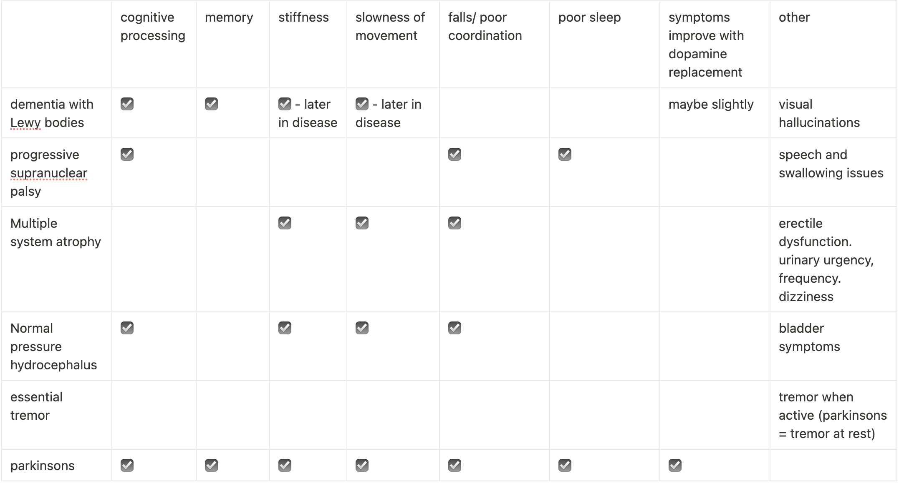

Differential Diagnosis:
Vascular Parkinsonism
Affects lower limbs.
Rest tremor is uncommon.
May have brain vascular lesions
Doesn't respond well to levodopa.
Drug induced Parkinsonism
Symmetrical, coarse postural tremor.
Improved within few months of complete drug withdrawal.
Essential Tremors
Symmetric, postural or kinetic tremor with high frequency.
Autosomal dominant inheritance.
May be accompanied by mild head tremor.
Multiple System Atrophy
Common cause of degenerative parkinsonism.
Core triad of dysautonomia, cerebellar features, and Parkinsonism.
Jerky postural tremors.
Progressive Supranuclear Palsy
Symmetric akinetic-rigid syndrome with predominantly axial involvement.
Gait and balance impairment (early falls)
Tremor is infrequently seen in these patients
Causes changes in movement, language skills or both (Corticobasal syndrome)

Comparison of alike conditions to help determine if a pateint
has parkinsons, or somthing similar. Parkinsons is the only condition which improves
with dopamine replacement.
Image by C.Drimmie...